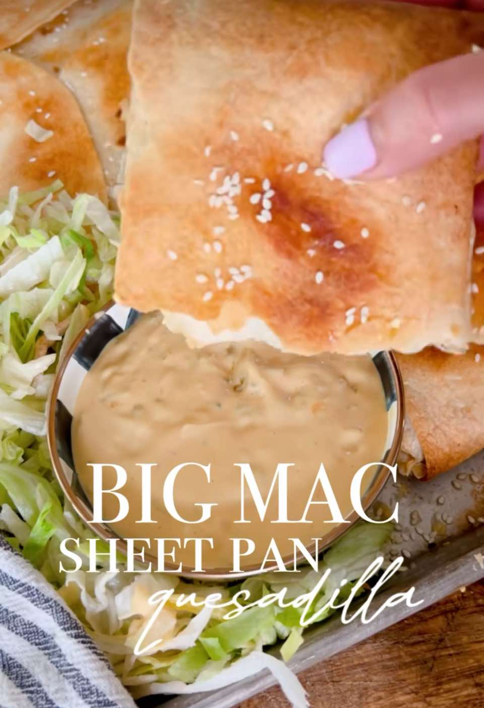

You Will Love This Big Mac Sheet Pan Quesadilla Recipe!
Main DishBeef
PrepPT0S
CookPT0S

Ingredients
- 8 large flour tortillas
- 2 lbs lean ground beef
- 15 slices American cheese
- 1 cup shredded cheddar cheese
- ½ cup onion (diced)
- Dill pickle chips
- ½ cup mayonnaise (you can also use light mayo)
- 1 Tbsp ketchup
- 1 Tbsp mustard
- 1 Tbsp pickle relish
- 2 tsp apple cider vinegar
- ½ tsp garlic powder
- ½ tsp onion powder
Directions
- Preheat oven to 425°F. Spray pan with cooking spray.
- Cook ground beef and set aside.
- Place 6 tortillas around the edges of the pan. Lay American cheese over the tortillas, next spread the meat mixture. Add pickles and diced onion.
- In a small bowl, combine sauce ingredients and drizzle over the quesadilla. Sprinkle cheddar cheese on top of the sauce mixture.
- Place the last two tortilla in the center and fold the tortillas towards the middle.
- Place the bottom of a sheet pan on top (to hold tortillas in place) and bake for 20 mins.
- Cool slightly before cutting and serve with sauce for dipping.
Notes
Ingredients
8 large flour tortillas
2 lbs lean ground beef
15 slices American cheese
1 cup shredded cheddar cheese
½ cup onion (diced)
Dill pickle chips
Sauce Ingredients:
½ cup mayonnaise (you can also use light mayo)
1 Tbsp ketchup
1 Tbsp mustard
1 Tbsp pickle relish
2 tsp apple cider vinegar
½ tsp garlic powder
½ tsp onion powder
Source
https://lifebyleanna.com/you-will-love-this-big-mac-sheet-pan-quesadilla-recipe/
This page includes Schema.org Recipe structured data for recipe importers.